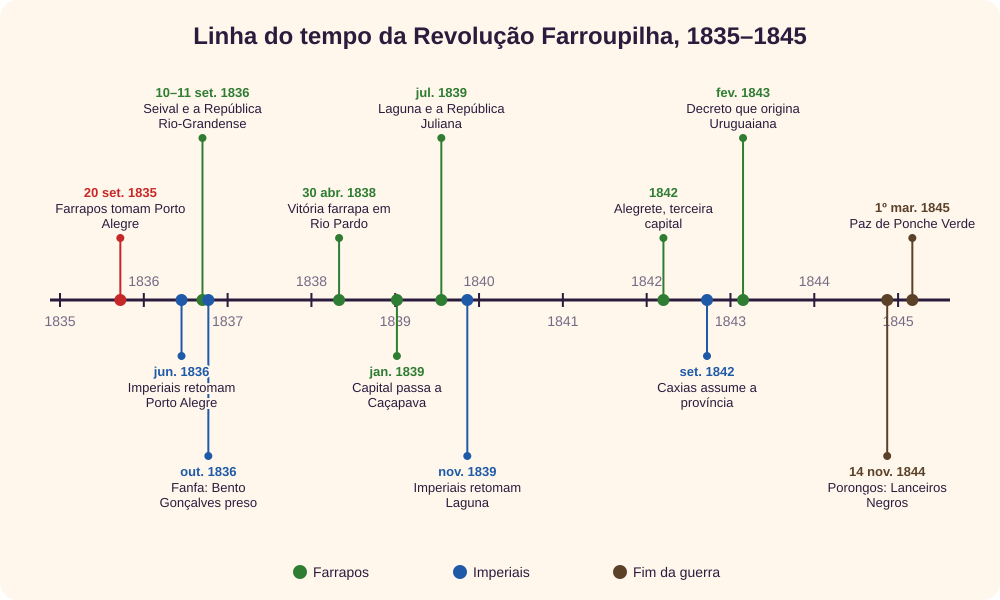
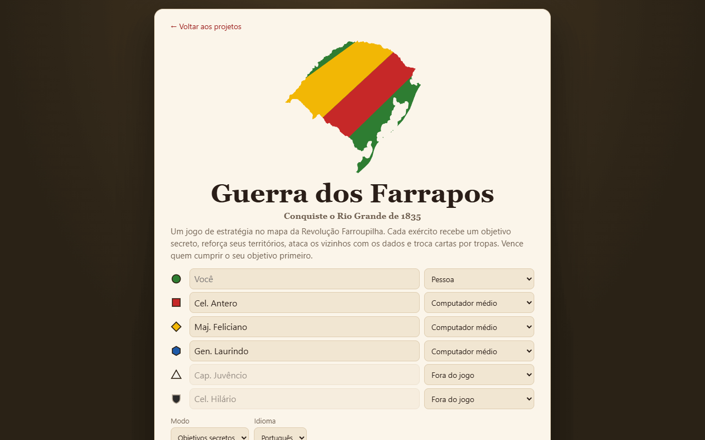
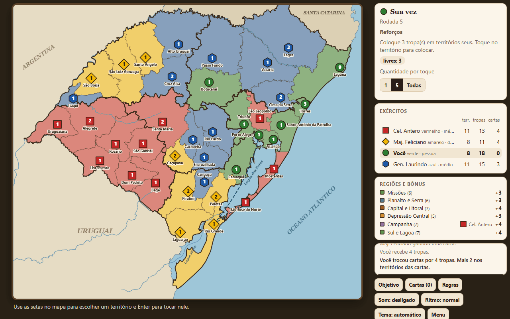
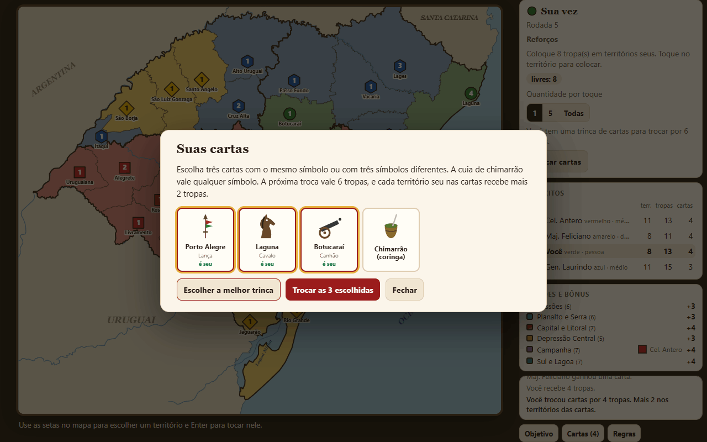
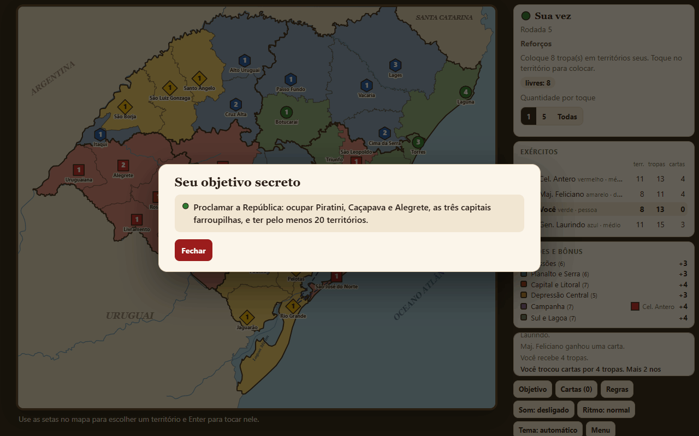
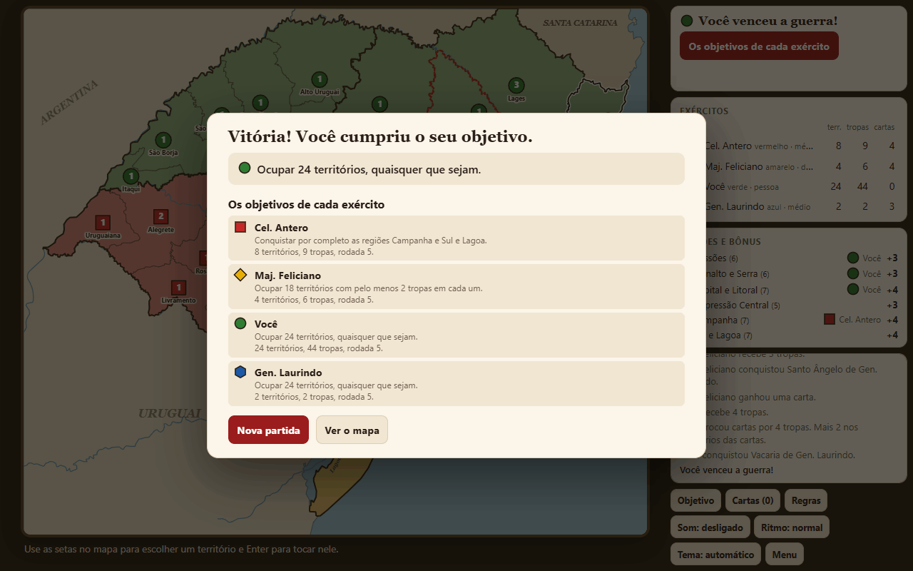

O jogo em um minuto
A Guerra dos Farrapos é um jogo de estratégia e conquista de territórios no mapa do Rio Grande do Sul. De 2 a 6 exércitos disputam 38 territórios: a cada vez, você recebe tropas, ataca os vizinhos jogando dados e remaneja o que sobrou. Cada exército tem um objetivo secreto, e vence quem cumprir o seu primeiro.
O cenário é o da Revolução Farroupilha, a guerra de 1835 a 1845 entre rebeldes rio-grandenses e o Império do Brasil. [1] [2] O jogo não reconstitui a guerra: os exércitos, as cores e os objetivos são inventados. Mas os objetivos lembram a história, como ocupar as três capitais farroupilhas ou dominar a Lagoa dos Patos.
↑ Voltar ao topoA Revolução Farroupilha

Por que começou
Entre as causas, a mais citada é econômica: o charque, a carne salgada que era o principal produto da província, pagava mais imposto que o charque vindo do Rio da Prata, e perdia mercado. [3] Somavam-se disputas por autonomia da província diante do governo central. [3]
Porto Alegre, a República e o Fanfa (1835–1836)
Em 20 de setembro de 1835, forças lideradas por Bento Gonçalves tomaram Porto Alegre. [1] A cidade não ficou muito tempo nas mãos dos rebeldes: em junho de 1836 os imperiais a retomaram e a mantiveram até o fim da guerra. [1]
Em 10 de setembro de 1836, os farrapos de Antônio de Souza Netto venceram os imperiais no combate do Seival. [4] No dia seguinte, Netto proclamou a República Rio-Grandense, com capital em Piratini. [5] Semanas depois, na ilha do Fanfa, no rio Jacuí, em Triunfo, Bento Gonçalves foi preso pelos imperiais. [6] Mais tarde ele fugiu do forte de São Marcelo, em Salvador, onde estava preso. [6]
Rio Pardo e as capitais (1838–1842)
Em 30 de abril de 1838, os farrapos venceram em Rio Pardo, então quartel-general imperial. [7] A capital da República mudou com a guerra: Piratini, depois Caçapava, de janeiro de 1839 a maio de 1840, [8] e Alegrete, a partir de 1842. [9]
Garibaldi, Laguna e a República Juliana (1839)
A Marinha imperial controlava as saídas da Lagoa dos Patos para o mar. [20] Para chegar a Santa Catarina, os lanchões Seival e Farroupilha, de Giuseppe Garibaldi e John Griggs, foram levados por terra da lagoa até a barra do Tramandaí. [10] Em julho de 1839 os farrapos tomaram Laguna e proclamaram a República Juliana, [11] que durou poucos meses: os imperiais retomaram a cidade em novembro do mesmo ano. [1] Foi em Laguna que Garibaldi conheceu Anita, que lutaria ao lado dele no Brasil e na Itália. [12]
Caxias, Porongos e Ponche Verde (1842–1845)
Em 1842, o então barão de Caxias foi nomeado presidente da província e comandante das forças imperiais, com a missão de encerrar a guerra. [13] Em 14 de novembro de 1844, no Cerro dos Porongos, hoje município de Pinheiro Machado, os Lanceiros Negros, soldados escravizados que lutavam pela promessa de liberdade, foram atacados de surpresa e massacrados. Historiadores ainda debatem a responsabilidade do comandante farroupilha Davi Canabarro. [14] Em 2024, os Lanceiros Negros foram inscritos no Livro dos Heróis e Heroínas da Pátria. [15]
A guerra terminou com o tratado de Ponche Verde, assinado em Dom Pedrito em 1º de março de 1845 [16] (uma fonte dá 28 de fevereiro [3]). A República Rio-Grandense e a Juliana voltaram a fazer parte do Império. [1]
↑ Voltar ao topoAs cidades do mapa
O mapa do jogo é desenhado com as divisas atuais dos municípios: cada território junta os municípios de hoje mais próximos da cidade que lhe dá nome. [21] Por isso as fronteiras do jogo não são as de 1835, e alguns lugares nem eram vilas na época. Estas são as cidades do mapa com papel conhecido na guerra:
| Cidade | Na guerra | No jogo |
|---|---|---|
| Porto Alegre | Tomada pelos farrapos em 1835 e retomada pelos imperiais em 1836. [1] O título “Leal e Valerosa”, no brasão da cidade, foi dado por decreto imperial de 1841. [17] | Capital e Litoral; objetivo da Lagoa dos Patos. Liga-se a Rio Grande pela lagoa. |
| Piratini | Primeira capital da República Rio-Grandense. [5] | Sul e Lagoa; objetivo das capitais. |
| Caçapava | Segunda capital, de 1839 a 1840. [8] | Depressão Central; objetivo das capitais. |
| Alegrete | Terceira capital, a partir de 1842. [9] | Campanha; objetivo das capitais. |
| Triunfo | Na ilha do Fanfa, Bento Gonçalves foi preso em 1836. [6] | Capital e Litoral. |
| Rio Pardo | Vitória farroupilha em 1838 sobre o quartel-general imperial; os imperiais voltaram a ocupar a cidade em novembro do mesmo ano. [7] | Depressão Central. |
| Rio Grande e São José do Norte | Ficam nos dois lados da barra, a saída da Lagoa dos Patos para o mar, que a Marinha imperial controlava. [20] | Sul e Lagoa; ligados pela travessia da barra. |
| Pelotas | Principal centro charqueador da província no século XIX, [19] ligado à questão do charque que está entre as causas da guerra. [3] | Sul e Lagoa; objetivo da Lagoa dos Patos. |
| Laguna | Tomada em 1839; sede da República Juliana, retomada pelos imperiais no mesmo ano. [11] [1] | Planalto e Serra, em Santa Catarina. |
| Litoral norte | Os lanchões de Garibaldi chegaram por terra à barra do Tramandaí. [10] | O município de Tramandaí fica no território de Santo Antônio da Patrulha. |
| Dom Pedrito | Ponche Verde, onde a paz foi assinada em 1845, fica no município. [16] | Campanha. |
| Uruguaiana | Nasceu de um decreto do governo republicano de fevereiro de 1843, que criou a capela da futura cidade. [18] | Campanha. |
O Seival e o Cerro dos Porongos não são territórios do jogo. Porongos fica no atual município de Pinheiro Machado. [14]
↑ Voltar ao topoComeçando uma partida

Na tela inicial há seis exércitos, cada um com cor e símbolo próprios: verde (círculo), vermelho (quadrado), amarelo (losango), azul (hexágono), branco (triângulo) e preto (escudo). Para cada um, escolha se joga uma pessoa, o computador no nível fácil, médio ou difícil, ou se fica fora do jogo. São necessários pelo menos dois exércitos.
- Objetivos secretos: cada exército recebe um objetivo, e vence quem cumpri-lo primeiro.
- Conquista total: vence quem ocupar todos os 38 territórios.
Com mais de uma pessoa no mesmo aparelho, a tela pede para passar a vez antes de mostrar o objetivo e as cartas de cada uma. A partida é salva no navegador, e o botão Continuar partida volta de onde você parou.
↑ Voltar ao topoA tela e o mapa

- O mapa. Cada território tem a cor do dono e uma ficha com o número de tropas. O formato da ficha também identifica o exército. As linhas grossas separam as seis regiões; as tracejadas são as ligações pela água.
- O painel de ação, no alto à direita, diz de quem é a vez, a fase e o que fazer.
- Exércitos: quantos territórios, tropas e cartas cada um tem.
- Regiões e bônus: quantas tropas extras cada região vale e quem a domina inteira.
- Registro: o que aconteceu nas últimas jogadas.
Passe o mouse sobre um território para ver nome, região, dono e tropas. No teclado, clique no mapa, escolha o território com as setas e toque nele com Enter ou espaço; Esc desfaz a escolha.
| Região | Territórios | Bônus |
|---|---|---|
| Missões | 6 | +3 |
| Planalto e Serra | 6 | +3 |
| Capital e Litoral | 7 | +4 |
| Depressão Central | 5 | +3 |
| Campanha | 7 | +4 |
| Sul e Lagoa | 7 | +4 |
Reforços e cartas
No começo da sua vez você recebe metade dos seus territórios em tropas, arredondada para baixo e no mínimo 3, mais o bônus de cada região que for toda sua. O bônus de região só pode ser colocado naquela região. Toque num território seu para colocar; os botões 1, 5 e Todas escolhem quantas tropas cada toque coloca.
Na primeira rodada ninguém ataca: depois dos reforços, a vez vai direto para o remanejamento.
Cartas

Quem conquista pelo menos um território na vez ganha uma carta no fim dela. Há 38 cartas de território, com lança, cavalo ou canhão, e 2 coringas com uma cuia de chimarrão. Três cartas com o mesmo símbolo, ou com três símbolos diferentes, trocam-se por tropas; o coringa vale qualquer símbolo. Cada território seu mostrado nas cartas trocadas ganha mais 2 tropas na hora. Com 5 cartas na mão, a troca é obrigatória antes de colocar tropas.
| Troca da partida | 1ª | 2ª | 3ª | 4ª | 5ª | 6ª | 7ª | 8ª |
|---|---|---|---|---|---|---|---|---|
| Tropas | 4 | 6 | 8 | 10 | 12 | 15 | 20 | 25 |
O valor sobe para todos: a contagem é da partida, não de cada exército. Por isso as trocas do fim do jogo valem muito mais.
↑ Voltar ao topoAtaque e dados
Toque num território seu com 2 tropas ou mais; os vizinhos inimigos ganham borda dourada. Toque num deles para atacar. O ataque joga até 3 dados, porque uma tropa sempre fica para trás, e a defesa joga até 3. Os maiores dados de cada lado são comparados em pares: o maior ganha, e o empate é da defesa. Cada par perdido custa uma tropa.
Depois do primeiro lance, use Atacar de novo para mais um lance ou Atacar até decidir para repetir até conquistar ou até ficar com uma tropa só. As ligações tracejadas valem como fronteira: Rio Grande ataca São José do Norte pela barra, e Porto Alegre ataca Rio Grande pela lagoa.
As chances de cada lance
Calculamos as chances exatas de um lance, com todas as combinações de dados: [22]
| Dados (ataque × defesa) | Defesa perde tudo | Cada lado perde | Ataque perde tudo |
|---|---|---|---|
| 1 × 1 | 41,7% | — | 58,3% |
| 2 × 1 | 57,9% | — | 42,1% |
| 3 × 1 | 66,0% | — | 34,0% |
| 3 × 2 | 37,2% | 33,6% | 29,3% |
| 3 × 3 | 13,8% | 47,9% | 38,3% |
Com três dados contra três, o ataque perde as três tropas em mais de um terço dos lances. A defesa leva vantagem porque joga tantos dados quanto o ataque e fica com os empates.
Chance de conquistar atacando até decidir
| Tropas (atacante × defensor) | Chance de conquistar |
|---|---|
| 3 × 1 | 75,4% |
| 4 × 2 | 65,6% |
| 6 × 3 | 56,7% |
| 10 × 5 | 61,6% |
| 20 × 10 | 64,2% |
| 6 × 5 | 27,8% |
| 10 × 8 | 28,0% |
| 20 × 18 | 13,7% |
O número do atacante conta a tropa que não pode sair. Mesmo com o dobro das tropas, a conquista fica perto de 60%; com forças parecidas, o ataque quase sempre perde.
A tela de vitória
Quando você conquista um território, aparece a tela de vitória: um lanceiro chega à estância e a bandeira do seu exército sobe no mastro. Uma tropa entra na hora, e você pode levar mais, até o número de dados do último ataque. Use o controle, os botões − e +, ou Mínimo e Máximo, e confirme em Ocupar. O resumo mostra quantas tropas ficam no território de origem. Se você tiver ligado no sistema a opção de reduzir movimento, a cena aparece pronta, sem animação.
↑ Voltar ao topoRemanejamento e fim da vez
Depois de Encerrar ataques, você pode levar tropas entre territórios seus que fazem fronteira. Toque na origem e depois no destino; os botões 1, 5 e Todas escolhem quantas vão. Cada território fica com pelo menos uma tropa, e cada tropa anda uma vez por turno: a que acabou de chegar não segue adiante.
Toque em Encerrar turno para passar a vez. Se você conquistou algum território, ganha uma carta nesse momento.
↑ Voltar ao topoOs objetivos secretos

No modo de objetivos secretos, cada exército recebe um destes objetivos:
- Duas regiões inteiras: Campanha e Sul e Lagoa; Missões e Campanha; Capital e Litoral e Depressão Central; Planalto e Serra e Capital e Litoral; Missões e Depressão Central; ou Sul e Lagoa e Depressão Central.
- Proclamar a República: Piratini, Caçapava e Alegrete, as três capitais farroupilhas, e 20 territórios.
- Dominar a Lagoa dos Patos: Porto Alegre, Viamão, Mostardas, São José do Norte, Rio Grande, Pelotas e Camaquã, e 18 territórios.
- 24 territórios quaisquer, ou 18 territórios com 2 tropas ou mais em cada.
- Eliminar um exército. Se outro jogador eliminá-lo antes, o objetivo passa a ser ocupar 24 territórios. Quem elimina um exército fica com as cartas dele.
Com 2 exércitos, cada um começa com 19 territórios, então os objetivos pedem 6 territórios a mais (e as duas regiões, 24 territórios no total); com 3 exércitos, 2 a mais. O objetivo é verificado na sua vez, a cada jogada: cumpriu, venceu.

Os níveis do computador
- Fácil: coloca os reforços ao acaso na fronteira, ataca só com vantagem e não remaneja. Numa guerra muito longa, depois da rodada 40, passa a jogar como o médio, para a partida acabar.
- Médio: concentra os reforços onde há alvos do objetivo ou da região que está quase completando, ataca com vantagem de 2 tropas ou mais e leva as tropas do interior para a fronteira.
- Difícil: como o médio, mas pesa mais as regiões quase completas, ataca com menos vantagem quando faltam poucos territórios para o objetivo e procura conquistar algo em toda vez, para ganhar carta.
Em partidas de 4 contra três computadores no médio, o difícil venceu 27,9% das vezes, contra 26,6% de um quarto médio. [22] A diferença é pequena: perto da margem de erro de 2 pontos.
↑ Voltar ao topoEstratégias
Testamos estilos de jogo em 2.000 partidas cada: um exército com o estilo indicado contra três computadores no nível médio, com objetivos secretos. [22] Se todos jogassem igual, cada um venceria 25%; a margem de erro é de cerca de 2 pontos para cima ou para baixo.
| Estilo de jogo | Partidas vencidas |
|---|---|
| Referência: o nível médio | 26,6% |
| Ataca com vantagem de só 1 tropa | 26,6% |
| Busca uma conquista por vez, para ganhar carta | 26,6% |
| Guarda as cartas até ser obrigado a trocar | 24,0% |
| Nunca remaneja | 23,1% |
| Ignora o próprio objetivo | 21,3% |
| Só ataca com mais que o dobro | 20,0% |
| Espalha os reforços, um por território da fronteira | 19,9% |
Os computadores não jogam como pessoas: olhe para a direção dos números, não para o valor exato. A mediana foi de 7 rodadas por partida.
Concentre os reforços
Espalhar as tropas pela fronteira derrubou as vitórias para 19,9%. Pelas tabelas dos dados, ataque bom é ataque com o dobro das tropas, e isso só se consegue juntando.
Cautela demais também perde
Atacar só com mais que o dobro caiu para 20,0%, embora esse estilo tenha sido eliminado em 6,8% das partidas, contra 13,1% da referência. Quem não ataca não ganha cartas nem avança no objetivo.
Jogue pelo seu objetivo
Ignorar o objetivo e atacar onde é mais fácil caiu para 21,3%. Escolha os ataques que aproximam você de cumprir o que está no seu papel.
Remaneje no fim da vez
Tropas paradas no interior não defendem nem atacam. Sem remanejar, as vitórias caíram para 23,1%.
Troque cartas cedo
Guardar as cartas até a quinta caiu para 24,0%. As tropas da troca valem mais agora, enquanto ainda há territórios fáceis de tomar.
Leve as tropas para onde está a luta
Na tela de vitória, leve o máximo se o território novo tem mais fronteira com inimigos que a origem. Se a origem é que segura a frente, deixe as tropas lá.
Erros comuns
- Atacar com forças parecidas. Com 6 contra 5, a chance de conquistar é de 27,8%.
- Esquecer o bônus de região. Ele só pode ir para a região que o gerou.
- Deixar a fronteira com 1 tropa. Um vizinho com 3 ou mais toma o território com facilidade.
- Esquecer as ligações pela água. Rio Grande também faz fronteira com Porto Alegre e com São José do Norte.
- Mostrar o objetivo. Os outros jogadores podem deduzir o seu objetivo pelos ataques. Às vezes vale atacar um alvo que não interessa, para confundir.
- Encerrar a vez sem conquistar nada. Sem conquista, não há carta.
Glossário
- Charque
- Carne salgada e seca ao sol, principal produto do Rio Grande no século XIX.
- Charqueada
- Estabelecimento onde se fazia o charque.
- Chimarrão
- Mate amargo tomado na cuia; no jogo, a carta coringa.
- Coxilha
- Elevação suave e arredondada dos campos do sul.
- Farrapos
- Nome dado aos rebeldes da Revolução Farroupilha.
- Lanceiro
- Soldado de cavalaria armado de lança.
- Remanejar
- Levar tropas entre territórios seus no fim da vez.
- Trinca
- Três cartas que podem ser trocadas por tropas.
Revisão rápida
Em resumo
- Na sua vez: reforços, ataques e remanejamento.
- Reforço é metade dos territórios, no mínimo 3, mais o bônus das regiões inteiras.
- Até 3 dados de cada lado, e o empate é da defesa.
- Conquistou algo na vez, ganha carta; três cartas viram tropas.
- Cumpra o seu objetivo secreto antes dos outros.
1. Você tem 13 territórios e domina a Depressão Central. Quantas tropas recebe?
6 pela metade dos territórios mais 3 da região: 9. As 3 da região só podem ir para a Depressão Central.
2. O ataque tirou 6 e 4; a defesa, 6 e 3. Quem perde o quê?
6 contra 6 é empate, e o empate é da defesa: o ataque perde uma. 4 contra 3: a defesa perde uma.
3. Quais cidades foram capitais da República Rio-Grandense?
Piratini, Caçapava e Alegrete, na ordem.
4. Por que os lanchões de Garibaldi foram levados por terra até o Tramandaí?
Porque a Marinha imperial controlava a saída da Lagoa dos Patos para o mar.
5. Com 10 tropas contra 5, atacando até decidir, qual é a chance de conquistar?
61,6%.
6. Nas simulações, o que rendeu menos vitórias: espalhar os reforços ou guardar as cartas?
Espalhar os reforços: 19,9%, contra 24,0% de quem guardou as cartas.
Referências
- Wikipédia (em inglês). Ragamuffin War. Visão geral; data a retomada de Porto Alegre em junho de 1836, a República Juliana em julho de 1839 e o fim da guerra. A data da retomada de Laguna varia entre 1º e 15 de novembro de 1839 conforme o artigo consultado.
- Wikipédia. Revolução Farroupilha.
- Infopédia. Guerra dos Farrapos. Aponta o imposto sobre o charque gaúcho, maior que o do charque platino, entre as causas, e data a paz em 28 de fevereiro de 1845; outras fontes dão 1º de março.
- Wikipédia (em inglês). Battle of Seival. Combate de 10 de setembro de 1836.
- Wikipédia (em inglês). Riograndense Republic. Proclamação em 11 de setembro de 1836 e Piratini como primeira capital. Fontes divergem sobre o lugar da proclamação: Campo dos Menezes, na maioria, ou Piratini.
- Wikipédia (em inglês). Battle of Fanfa. Ilha do Fanfa, em Triunfo, 3 e 4 de outubro de 1836; outras fontes dão 2 de outubro para a prisão de Bento Gonçalves.
- Wikipédia (em inglês). Battle of Barro Vermelho. Também chamada batalha de Rio Pardo, em 30 de abril de 1838. As estimativas de tropas variam entre as fontes.
- Governo do Estado do Rio Grande do Sul. Governo homenageia a segunda capital farroupilha. Caçapava foi capital de 9 de janeiro de 1839 a 30 de maio de 1840.
- Governo do Estado do Rio Grande do Sul. Terceira capital farroupilha recebe homenagem. Alegrete, capital a partir de 1842.
- Wikipédia (em inglês). Capture of Laguna. Os lanchões Seival e Farroupilha, de Garibaldi e John Griggs, levados por terra da Lagoa dos Patos à barra do Tramandaí.
- Wikipédia (em inglês). Juliana Republic. Proclamada em Laguna em julho de 1839; os artigos dão 24 ou 29 de julho.
- Wikipédia (em inglês). Anita Garibaldi. Conheceu Giuseppe Garibaldi em Laguna, em 1839; o mês varia entre as fontes.
- Encyclopedia.com. Duque de Caxias. Nomeado presidente e comandante no Rio Grande do Sul em 1842; outras fontes dão 23 ou 24 de setembro.
- Revista Expedições (UEG). Artigo sobre o Cerro dos Porongos. 14 de novembro de 1844, no atual município de Pinheiro Machado; registra o debate entre historiadores sobre a responsabilidade de Canabarro.
- Brasil de Fato, 9 jan. 2024. Lanceiros Negros entram para o Livro dos Heróis e Heroínas da Pátria.
- Wikipédia (em inglês). 1845 in Brazil. Tratado de Ponche Verde assinado em Dom Pedrito em 1º de março de 1845.
- Flags of the World. Porto Alegre (Rio Grande do Sul, Brazil). O título “Leal e Valerosa” do brasão da cidade, dado por decreto imperial de 1841.
- IBGE. Uruguaiana (monografia municipal). Decreto republicano de fevereiro de 1843 cria a capela que deu origem à cidade. Uma fonte de turismo dá 1846, ano em que a vila foi criada.
- Jornal do Comércio, jul. 2026. História do charque na região sul gaúcha segue preservada. Pelotas como principal centro charqueador do século XIX.
- Revista do Clube Naval. Artigo sobre Garibaldi na Revolução Farroupilha. A Marinha imperial controlava os acessos da Lagoa dos Patos, e as embarcações farroupilhas foram levadas por terra até o oceano.
- IBGE. Malhas territoriais, e Natural Earth. Dados usados para desenhar o mapa do jogo.
- Simulações e cálculos próprios com o jogo Guerra dos Farrapos deste site. As chances dos dados são exatas, por enumeração de todas as jogadas. As estratégias vêm de partidas entre jogadores do computador e não medem pessoas.